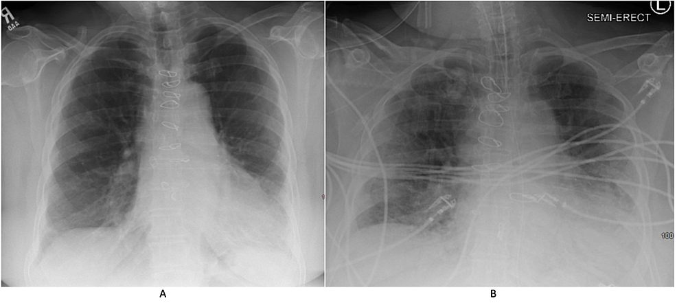
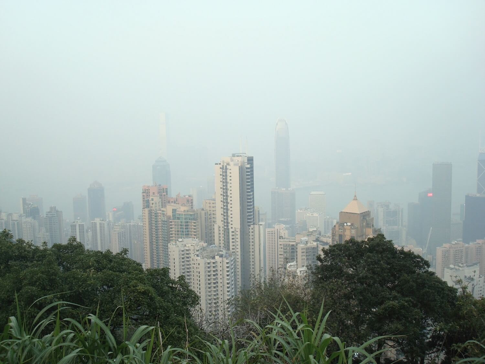

Air pollution can lead to a plethora of respiratory illnesses. Recent research shows that it contributes to the progression of Idiopathic Pulmonary Fibrosis (IPF)—a chronic and irreversible lung disease.
With growing urbanisation, the air pollution that was once solely associated with major cities, is rapidly becoming an issue for the majority of the world's population. Data from the World Bank indicates that 56% of global inhabitants now
live in urban areas. That’s over 4 billion people exposed to pollution and all of the health risks associated with it. Studies have indicated that IPF may be yet another disease strongly linked to and made worse by air pollutants.
IPF is a lung disease where the alveoli, small air sacs in the lungs, become irreversibly scarred. This fibrosis (permanent scarring of the lung tissue) stiffens the lungs, impeding oxygen flow into the bloodstream. Symptoms include a dry
cough and shortness of breath after even the most simple tasks, such as getting dressed. Although there are treatments available to alleviate symptoms, there is no current cure and no known direct cause. Sadly, only half of IPF patients
live 3 years beyond their diagnosis.
Idiopathic pulmonary fibrosis may be associated with long term exposure of air pollution. This disease causes fibrosis of the alveoli, and patients experience shortness of breath and a poor quality of life | CDC / Unsplash
Patients with IPF may experience a sudden deterioration of lung functioning and develop acute exacerbation of IPF (AE-IPF). After AE-IPF develops, most patients only survive 3 to 13 days. Although the cause remains unknown, long term
exposure of air pollutants may be involved in its pathogenesis.
‘...only half of Idiopathic pulmonary fibrosis patients live 3 years beyond their diagnosis.’
The role of air pollution
A 2021 study by Tomos and colleagues found a significant association between AE-IPF and increasing levels of air pollution, namely nitrogen dioxide (NO2) and fine particulate matter (PM). NO2 is largely produced from
transportation
emissions, whereas PM is a mixture of small particles and liquid droplets in the air. Another pollutant studied was ozone (O3) which is also known to induce oxidative stress and airway inflammation.
Factory smokestacks emit a considerable amount of particulate matter into the atmosphere. | Ella Ivanescu / Unsplash
Most PM is formed from chemical reactions of sulfur dioxides and nitrogen oxides emitted from sources such as power plants and cars. PMs can be inhaled and end up deep into the respiratory tract, where they cause inflammation and free
radical reactions, which are processes involved in IPF deterioration and progression. The study found that long-term exposure to higher concentrations of these air pollutants is a risk factor for AE-IPF.
Blood tests on AE-IPF patients have shown in more detail how exposure to pollutants (NO2, PM and O3) have been associated with changes in IL-4 and IL-13 (inflammatory cytokines), and osteopontin, a protein involved in
immune reactions.
Results suggest that long term exposure to ozone may elevate these cytokines, while presence of NO2 and PM may decrease them. These changes in cytokine levels instigate an immune response, leading to the aggravation of
respiratory diseases
such as AE-IPF.
Demonstrating the physical health impact of air pollution—such as the aggravation of IPF—hopefully provides another incentive to reduce anthropogenic emissions aside from mitigating climate change. Air pollution in general is known to cause
inflammation, by promoting reactive oxygen species (ROS) and oxidative stress. ROS are unstable molecules containing oxygen that react with other molecules and damage DNA, RNA, and proteins. In turn, oxidative stress is caused by the
accumulation of ROS, both biochemical reactions driving inflammation and cell death. This is why these biochemical reactions are damaging and increase the morbidity of many chronic diseases.

The X-ray of a pair of lungs shows a case of Idiopathic Pulmonary Fibrosis. On the right, the radiographic image shows the same patient after contracting COVID-19. | Rajasurja, Venkat 2020 / Curious.
Why is research into the effects of air pollution so difficult?
There is a growing need to further examine the connection between air pollution and IPF, and therefore learn from the limitations of existing research. Tomos’ (2021) study and other studies in this area have had small sample sizes with few
participants, highlighting the need for a large-scale study that supports these results and the pathogenetic mechanisms involved.
Long term exposure is also often difficult to measure as exposure is also often misclassified by using estimated air pollution concentrations. This means that the exposure of the environment to pollutants is measured rather than an
individual’s personal exposure. However, this approach does show variability of air pollution within different environments which previous techniques, such as using data from the nearest air quality monitoring station, do not.
Tackling pulmonary disease with policy
Combatting these health concerns involves improving air quality and tackling emissions. Some cities have created Low Emission Zones to do just that. For example, there is the Ultra Low Emission Zone (ULEZ) in central London, in which
vehicles need to meet ULEZ emission standards or pay a daily fee to drive through the city centre. This acts as a deterrent for travel by car, reducing the number of vehicles on the road and encouraging the use of public transport. The
scheme will expand to cover more of the city in October 2021 and has directly reduced 44% of roadside NO2 since the COVID-19 pandemic began, according to the “Air Quality in London 2016-2020” report. This is a step in the right
direction
seeing as long-term exposure to air pollution has been named the largest environmental threat to the health of Londoners and caused 4,000 deaths in the city in 2019.

Hong Kong surrounded by fog and greenery. | Hitting Up Studios / Unsplash
Another strategy is to create green spaces that utilise the ability of plants to absorb air pollutants. Moreover, endophytes, which are the endosymbiotic microbes that occupy leaves, are able to biodegrade pollutants into less toxic
molecules. This process is known as biological remediation. Utilising plants to improve air quality has been done by China’s Hebei Province. A “green necklace” of trees is being created around its capital, Beijing, in an attempt to mitigate
air pollution from factories. David Nowak, a senior scientist at the US Forest Service, states that “trees are particularly effective at removing particulate matter”. Nevertheless, he believes that the best way to improve air quality is to
reduce emissions to begin with.
‘Trees are particularly effective at removing particulate matter.’
Air pollutants harm our lungs by causing recurrent epithelial injury, leading to lung scarring. Multiple exposures to air pollution over time can have an even larger impact, upregulating inflammatory responses and oxidative stress and then
amplifying lung injury and fibrosis. This aggravates the outcome of IPF and may contribute to the occurrence of its exacerbated presentation. Although existing studies in this area require larger-scale replication to confirm the results,
programmes that lower emissions and sequester existing pollutants supposedly have the potential to reduce cases of IPF and other similar diseases. If these are not implemented soon, the health of the public will be put at further risk along
with the health of the environment.
Feature Image: Robina Weermeijer / Unsplash
Juarez, M. et al. (2015) Acute exacerbation of idiopathic pulmonary fibrosis - a review of current and novel pharmacotherapies. Journal of Thoracic Disease. 7 (3), 499-519
Majewski S., Piotrowski W.J. (2021) Air Pollution—An Overlooked Risk Factor for Idiopathic Pulmonary Fibrosis. J. Clin. Med. 10, 77.
Tomos, I. et al. (2021) Long-term personal air pollution exposure and risk for acute exacerbation of idiopathic pulmonary fibrosis. Environ Health 20, 99
Wei, X. et al. (2017) Phylloremediation of Air Pollutants: Exploiting the Potential of Plant Leaves and Leaf-Associated Microbes. Frontiers in Plant Science. Volume 8, 1318